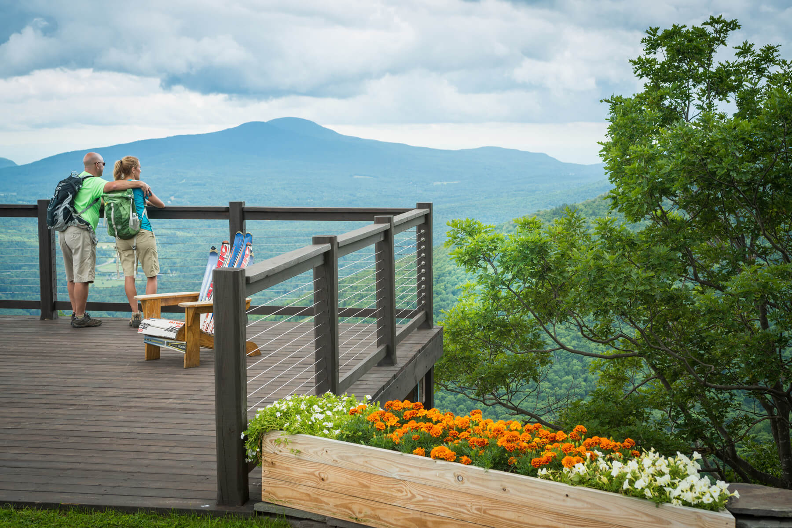
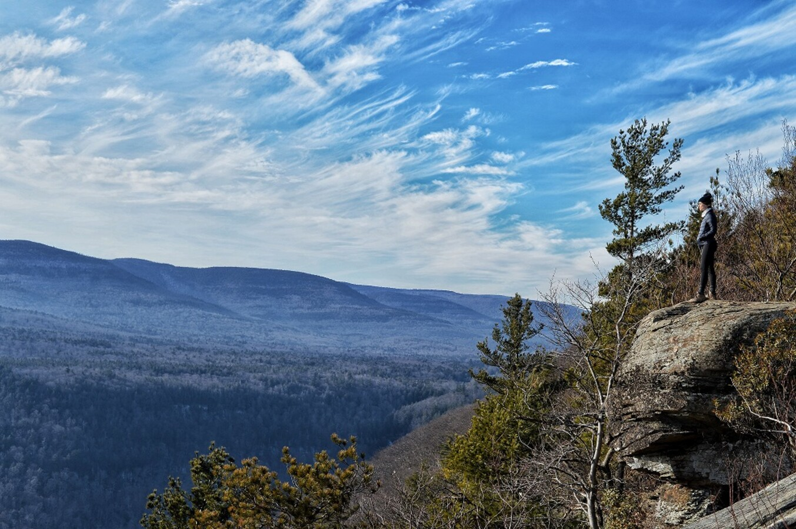
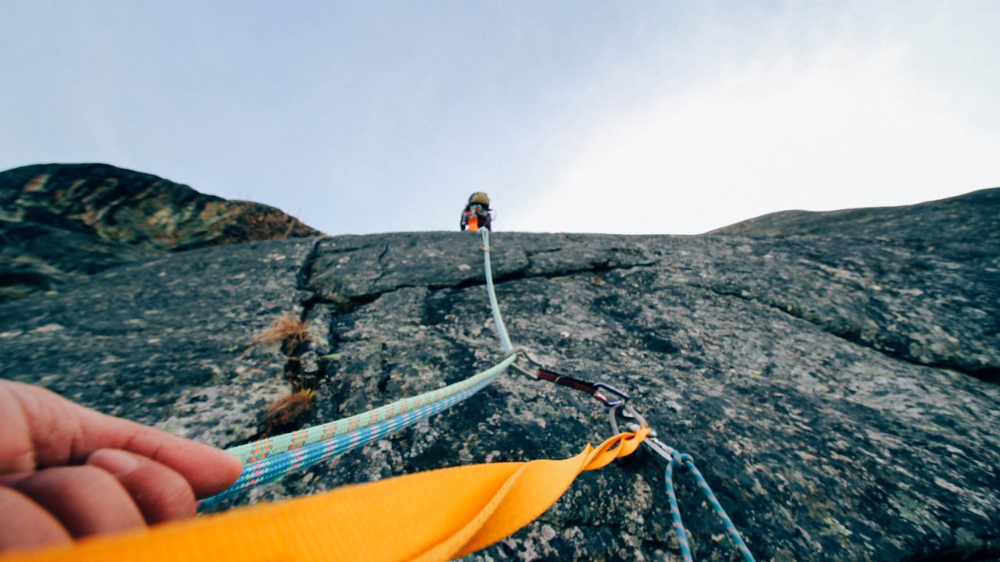
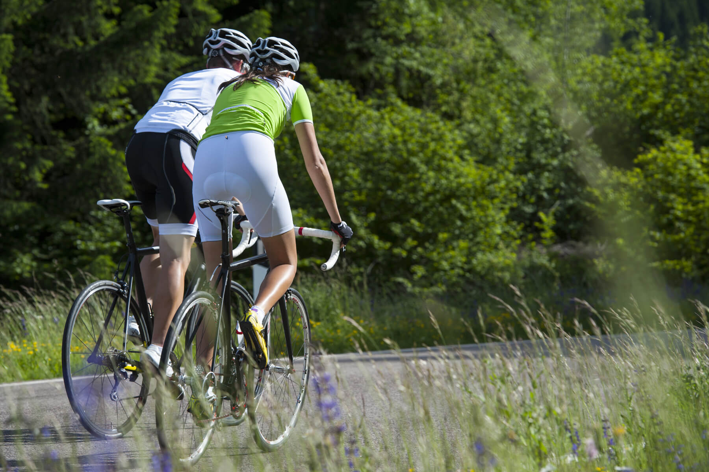

Grab your keys or rent a car and head to the Catskills for an unforgettable road trip! With scenic vistas, exceptional eateries, and unlimited outdoor exploration, the region is home to a wide variety of unique experiences.
The Catskill Region is home to some of New York State’s most beautiful mountain trails, and hiking to the top will reward you with stunning views of the rivers and valleys below.


When it comes to planning a family trip, the Catskills check every box on your list. A+ attractions with lots of kid-friendly activities? Check. Great pizza, ice cream, and microbrews for mom and dad? Check! Out-of-the-box experiences that create lasting memories? Check, check!
The scenic nature of the Catskills makes it a popular destination for cycling enthusiasts. Small towns dotting the countryside make excellent starting points and the rich character of the local mountains makes for naturally feature-heavy mountain bike courses that result in fun and exhilarating rides.


The Catskills has a long history of attracting photographers, poets, writers, and musicians with its natural beauty. Find yet-to-be-discovered talent in small local galleries, browse masterpiece works in world-class museums, or sit back and enjoy a show at an area theatre.